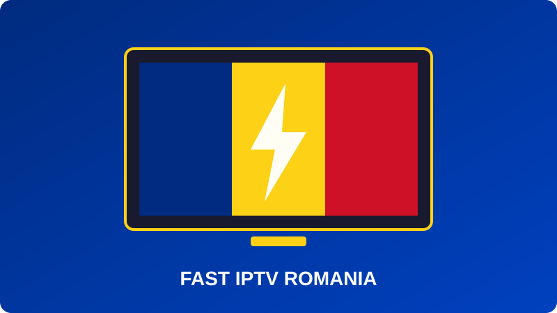
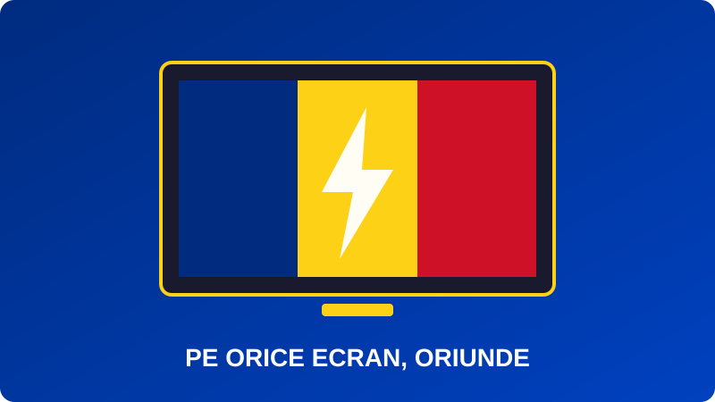

Daca locuiesti in afara tarii si vrei sa vezi canalele de acasa fara intarzieri, probabil ai cautat deja fast iptv romania. Tot mai multi romani renunta la cablu si parabola si aleg IPTV, pentru ca este simplu, flexibil si merge pe televizor, telefon sau tableta, oriunde ai internet.
In acest ghid explicam ce inseamna fast iptv romania, ce viteza de internet ai nevoie, cum pornesti canalele mai repede, ce dispozitive alegi si cum eviti listele gratuite lente sau nesigure. Totul este scris pentru romani, cu accent pe diaspora si pe canalele romanesti preferate.
La final ai si un test gratuit prin WhatsApp, ca sa verifici viteza inainte de abonare. Daca esti la inceput, citeste mai intai iptv romania, apoi revino aici. Poti citi si despre fast iptv si evo iptv.

Cuprins
- Ce este fast iptv romania?
- Ce canale romanesti primesti
- Ce viteza de internet ai nevoie
- Cum pornesc canalele mai repede
- Pe ce dispozitive merge cel mai bine
- Liste gratuite sau abonament verificat
- De ce sa alegi Romania IPTV
- Fast iptv romania pentru romanii din diaspora
- Greseli frecvente de evitat
- Probleme frecvente si solutii rapide
- Cum optimizezi Wi-Fi-ul acasa
- Comparatie rapida: cablu, satelit si IPTV
- Cum alegi un furnizor bun
- Ce emisiuni urmaresc romanii
- Mituri despre IPTV rapid
- Cat costa si ce include abonamentul
- Intrebari frecvente
- Concluzie
Ce este fast iptv romania?
Cand cauti fast iptv romania, vrei de fapt televiziune romaneasca care porneste imediat, nu se blocheaza si arata bine pe orice ecran. Nu este un produs cu un singur nume, ci o promisiune clara: canale incarcate in cateva secunde, imagine fluida si zapping rapid intre posturi.
Cum functioneaza IPTV
Furnizorul transmite canalele prin internet, de pe servere puternice. Tu introduci datele de acces intr-o aplicatie, iar lista se incarca. Cu cat serverul este mai bun si conexiunea ta mai stabila, cu atat fast iptv romania este mai rapid. Daca vrei bazele, citeste what is iptv sau ce inseamna iptv.
De ce conteaza viteza pentru diaspora
Un serviciu lent te face sa pierzi golul, replica sau finalul serialului. De aceea romanii plecati in strainatate cauta fast iptv romania: vor sa vada emisiunile de acasa exact la ora lor, fara intarzieri si fara imagini inghetate.
Ce canale romanesti primesti
Viteza nu inseamna nimic fara continut. Un pachet bun de fast iptv romania trebuie sa includa o lista larga de canale romanesti, nu doar cateva posturi populare.
Generaliste si divertisment
Pro TV, Antena 1, Kanal D, Prima TV si Acasa TV aduc telenovele, seriale si emisiuni de divertisment. Lista completa o gasesti in pagina canale romanesti.
Stiri si sport
Digi24, Antena 3 CNN, Realitatea si canalele Digi Sport completeaza oferta. Pentru sport, citeste si eurosport iptv si espn iptv.
Filme, desene si documentare
Familia intreaga isi gaseste canalul preferat, de la desene in limba romana pana la documentare, muzica si filme. Pentru liste detaliate vezi canale romanesti iptv.
Ce viteza de internet ai nevoie
Primul pas pentru un fast iptv romania stabil este conexiunea. Iata valorile orientative:
| Calitate | Viteza minima | Recomandare |
|---|---|---|
| SD | 5 Mbps | Telefon |
| HD | 10 Mbps | Smart TV |
| 4K | 25 Mbps | Cablu de retea |
Cum testezi viteza
Ruleaza un test de viteza pe dispozitivul pe care vezi TV, la ora la care urmaresti de obicei. Seara, retelele sunt mai aglomerate decat dimineata, iar diferenta se vede imediat.
Cablu sau Wi-Fi
Cablul Ethernet ramane cea mai buna solutie pentru televizorul principal. Pentru Wi-Fi, foloseste banda de 5 GHz si apropie routerul de dispozitiv. Daca ai mai multe conexiuni active in casa, calculeaza viteza pentru toate odata.
Cum pornesc canalele mai repede
Chiar si cu un serviciu bun, setarile locale pot incetini fast iptv romania. Aplica pasii de mai jos, in ordine:
- Conecteaza dispozitivul prin cablu de retea.
- Actualizeaza aplicatia player la ultima versiune.
- Sterge cache-ul aplicatiei o data pe luna.
- Pastreaza doar categoriile de canale pe care le folosesti.
- Reporneste routerul si boxul periodic.
Ghid TV (EPG)
Un ghid TV incarcat o singura data, la pornire, nu mai intarzie zapping-ul. Detalii in articolul epg iptv.
Memorie si spatiu liber
Dispozitivele cu memorie plina se misca greu. Dezinstaleaza aplicatiile nefolosite si lasa cel putin 20% spatiu liber, ca sa nu apara blocaje la schimbarea canalului.
Pe ce dispozitive merge cel mai bine
Aceleasi date de acces functioneaza pe mai multe aparate, in limita conexiunilor din abonament. Alegerea dispozitivului schimba mult experienta fast iptv romania.
Smart TV si box Android
Cea mai buna experienta pe ecran mare. Un box Android recent are procesor rapid si porneste canalele aproape instant; vezi android box iptv si smart tv iptv.
Fire TV Stick
Alegere populara, ieftina si usor de instalat, potrivita pentru orice televizor cu HDMI.
Telefon, tableta si calculator
Perfect pentru jurnalul de seara in deplasare sau pentru un meci in pauza de pranz. Aplicatiile se gasesc usor, iar lista se incarca in cateva secunde. Vezi si iptv app.

Liste gratuite sau abonament verificat
Multi cauta liste gratuite pentru fast iptv romania, dar ele sunt rareori rapide. Sute de utilizatori se conecteaza la acelasi server, iar canalele cad des. Pentru context, vezi free iptv romania si iptv romania gratis.
Ce primesti cu un abonament
Servere dedicate, canale actualizate, ghid TV si ajutor pe WhatsApp. Pentru comparatii de furnizori citeste si best iptv romania.
Ce face diferenta la viteza
Un furnizor serios nu isi aglomereaza serverele. Numarul de utilizatori pe server este limitat, iar traficul este distribuit in mai multe puncte din Europa, ceea ce reduce latenta pentru romanii din diaspora.
De ce sa alegi Romania IPTV
Romania IPTV este construit special pentru publicul romanesc. Pachetul include canale romanesti HD, ghid TV, filme si seriale la cerere, plus suport in limba romana pe WhatsApp.
Servere stabile
Infrastructura este gandita pentru seara de sambata, cand cei mai multi romani urmaresc simultan emisiuni si meciuri. Asta inseamna fast iptv romania fara cozi si fara intreruperi.
Suport rapid in limba romana
Ai o problema? Scrii pe WhatsApp si primesti ajutor pas cu pas pentru instalare sau pentru setarile aplicatiei. Pentru mai multe detalii, citeste iptv romania.
Fast iptv romania pentru romanii din diaspora
Peste jumatate din cei care cauta fast iptv romania locuiesc in afara tarii. Distanta fata de casa se simte cel mai tare in serile cand familia se aduna in fata televizorului.
Germania, Italia, Spania si Marea Britanie
In aceste tari, comunitatea romaneasca este numeroasa, iar internetul este de obicei rapid. IPTV functioneaza fara parabola si fara contract. Vezi ghidul programe romanesti in Germania si iptv romania diaspora.
Canale la ora Romaniei
Emisiunile se difuzeaza live, la ora Romaniei, iar ghidul TV se adapteaza fusului tau orar. Astfel nu ratezi stirile de seara sau telenovela preferata.
Cum ramai in legatura cu traditiile
De Craciun, de Paste sau de 1 Decembrie, mii de romani isi urmaresc programele speciale direct din alta tara. Cu fast iptv romania nu ratezi nicio transmisiune.
Greseli frecvente de evitat
Multe probleme de viteza vin din obiceiuri simple. Iata ce sa eviti:
- Folosirea Wi-Fi-ului 2.4 GHz pe un televizor aflat departe de router.
- Instalarea mai multor aplicatii player pe acelasi dispozitiv, care ocupa memorie.
- Folosirea listelor publice gratuite, aglomerate si instabile.
- Ignorarea actualizarilor de aplicatie si de sistem.
- Un VPN lent lasat pornit fara motiv.
VPN si viteza
Un VPN adauga latenta. Daca nu ai nevoie de el, opreste-l pentru fast iptv romania. Detalii in iptv vpn.
Probleme frecvente si solutii rapide
Chiar si cel mai bun fast iptv romania poate avea momente dificile. Cele mai comune situatii si solutiile lor:
Imaginea se opreste din cand in cand
Verifica viteza reala la ora respectiva, treci pe cablu si reporneste routerul. Daca problema persista, cere suport pe WhatsApp.
Canalul nu porneste deloc
Reincarca lista in aplicatie si verifica data si ora dispozitivului. O ora gresita poate bloca autentificarea.
Sunetul nu este sincron cu imaginea
Schimba playerul intern sau activeaza decodarea hardware. Pe boxurile mai vechi, un restart rezolva de obicei problema.
Cum optimizezi Wi-Fi-ul acasa
O retea bine pusa la punct face diferenta dintre un fast iptv romania excelent si unul frustrant.
Pozitia routerului
Pune routerul central, ridicat de la podea si departe de cuptorul cu microunde sau de telefoanele fara fir.
Canale si benzi
Alege un canal Wi-Fi mai putin aglomerat, mai ales in blocuri unde vecinii folosesc aceeasi frecventa. Banda de 5 GHz este mai rapida pe distante scurte.
Sisteme mesh si powerline
Daca apartamentul este mare, un sistem mesh sau un adaptor powerline aduce semnal stabil in dormitor sau in sufragerie.
Comparatie rapida: cablu, satelit si IPTV
| Criteriu | Cablu | Satelit | IPTV |
|---|---|---|---|
| Instalare | Tehnician | Parabola | Aplicatie |
| Contract | Lung | Mediu | Flexibil |
| Din strainatate | Nu | Limitat | Da |
| Mobilitate | Nu | Nu | Da |
Pentru romanii din diaspora, IPTV este singura varianta care urmareste familia de la o adresa la alta. Un fast iptv romania bun inlocuieste complet cablul. Vezi comparatia din iptv vs dvb-c.
Cum alegi un furnizor bun
Inainte sa platesti, verifica aceste puncte:
- Ofera test gratuit, fara card.
- Are suport real, in limba romana.
- Include canale romanesti HD actualizate.
- Spune clar cate conexiuni primesti.
- Nu cere date personale inutile.
- Are preturi afisate clar, fara taxe ascunse.
Semnale de alarma
Preturi exagerat de mici, promisiuni de mii de canale fara dovada si lipsa oricarui contact sunt semne ca serviciul nu este de incredere. Un fast iptv romania serios se testeaza inainte de plata. Compara si in furnizori iptv romania.
Ce emisiuni urmaresc romanii
Majoritatea celor care aleg fast iptv romania urmaresc aceleasi tipuri de continut.
Seriale si telenovele
Productiile Pro TV, Antena 1 si Kanal D tin familiile in fata ecranului in fiecare seara. Cu inregistrare si reluari, nu pierzi nicio parte.
Stiri si dezbateri
Jurnalele Digi24 si Antena 3 CNN te tin la curent cu ce se intampla acasa, mai ales in perioade de alegeri.
Sport si divertisment
Fotbal intern, Liga Campionilor, Formula 1 si tenis sunt transmise pe canalele sportive. Vezi si sky sport iptv.
Mituri despre IPTV rapid
In jurul termenului fast iptv romania circula idei gresite:
- Mit: mai multe canale inseamna mai multa viteza. Realitate: conteaza serverul si conexiunea, nu numarul de canale.
- Mit: 4K merge pe orice internet. Realitate: ai nevoie de minimum 25 Mbps stabili.
- Mit: Wi-Fi-ul si cablul sunt la fel. Realitate: cablul este mai stabil.
- Mit: listele gratuite sunt la fel de bune ca abonamentele. Realitate: sunt aglomerate si instabile.
Cat costa si ce include abonamentul
Pretul pentru fast iptv romania depinde de durata si de numarul de conexiuni. Abonamentele pe 6 sau 12 luni au un cost lunar mai mic, iar familiile pot alege mai multe conexiuni. Detalii in iptv romania pret si abonament iptv romania.
Ce ar trebui sa includa
Canale romanesti HD, ghid TV, filme si seriale la cerere, suport pe WhatsApp si actualizari continue, fara costuri ascunse.
Cum comanzi
Scrii pe WhatsApp, primesti testul, iar dupa ce te convinge calitatea, alegi abonamentul potrivit. Procesul dureaza cateva minute.
Intrebari frecvente
Ce inseamna fast iptv romania?
Este un serviciu IPTV orientat spre canale romanesti care porneste repede, nu se blocheaza si ruleaza fluid pe televizor, telefon sau tableta, oriunde ai internet.
Ce viteza de internet am nevoie pentru fast iptv romania?
Minimum 5 Mbps pentru SD, 10 Mbps pentru HD si 25 Mbps pentru 4K. Pentru sport live recomandam cablu de retea si o marja de siguranta de 30%.
De ce se blocheaza canalele romanesti seara?
Seara retelele sunt aglomerate, iar serverele gratuite se supraincarca. Cablul Ethernet, o aplicatie actualizata si un furnizor cu servere dedicate reduc problema.
Pot vedea canalele romanesti din strainatate?
Da. IPTV functioneaza oriunde ai internet: Germania, Italia, Spania, Marea Britanie sau Belgia. Vezi aceleasi canale ca acasa, cu Pro TV, Antena 1, Kanal D si Digi24.
Ce dispozitiv este cel mai rapid?
Un box Android sau un Fire TV Stick recent, conectat prin cablu, ofera de obicei cele mai bune rezultate. Smart TV-urile vechi pot fi mai lente.
Este legal un serviciu IPTV?
Tehnologia IPTV este legala. Alege un furnizor transparent, cu suport real, si evita sursele necunoscute sau listele publice neverificate.
Pot folosi acelasi abonament pe mai multe dispozitive?
Da, in limita numarului de conexiuni din abonament. Familiile aleg adesea doua sau trei conexiuni, ca sa vada simultan pe TV si pe telefon.
Exista test gratuit?
Da, poti cere un test pe WhatsApp, fara card si fara contract, ca sa verifici viteza si calitatea imaginii inainte de abonare.
Testeaza gratuit canalele romanesti
Scrie-ne pe WhatsApp si primesti acces de test, fara card si fara contract.
Cere testul pe WhatsAppConcluzie
Pe scurt, fast iptv romania inseamna un serviciu stabil, o conexiune buna si setari corecte. Cu cablu, aplicatie actualizata si un furnizor de incredere, canalele romanesti pornesc repede si ruleaza fluid, indiferent in ce tara locuiesti.
Daca vrei sa incerci, scrie-ne pe WhatsApp si cere un test cu Romania IPTV. Mai multe ghiduri gasesti in blog. Pentru alte perspective, vezi si greek iptv sau tilaa iptv.
Citeste si: eurosport iptv.